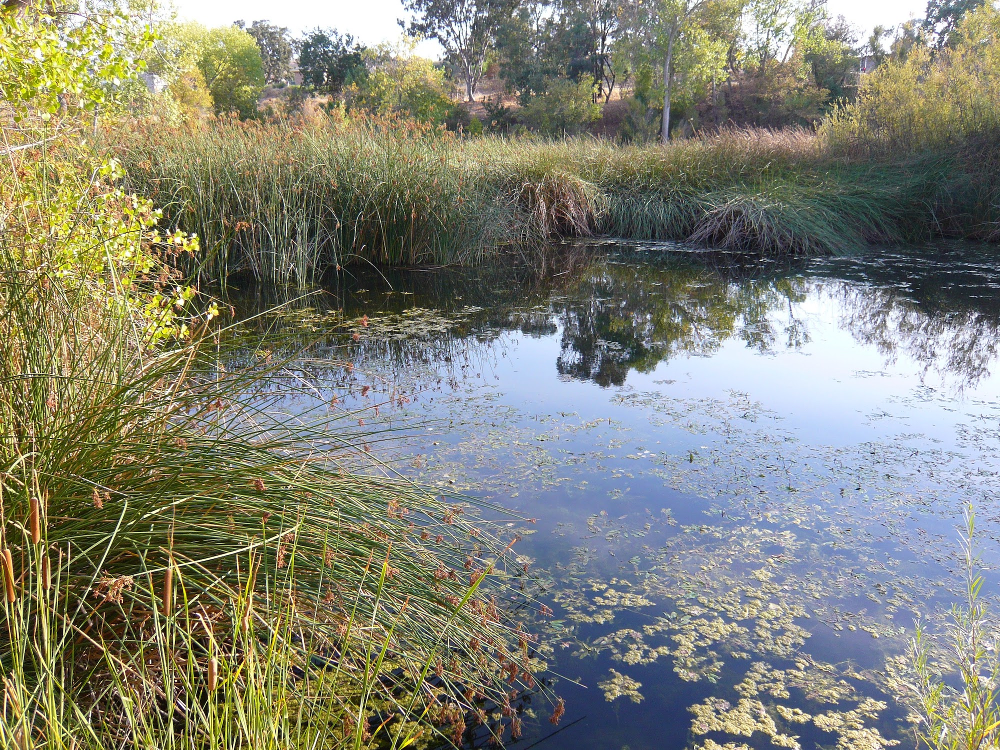

About the Lake
Calling Arastradero a lake is a misnomer - it's more of a farm pond than anything else. Surrounded by tules, shoreline access can be very difficult (no boats or float tubes allowed). There are only 3 or 4 places where you can cast into the lake. The fishing can be decent here, if you can snag one of the few fishing spots.
Arastradero has a lot of small bass that roam in schools around the lake, especially during early on in the summer and during warm evenings. When one of the schools pass by, throw a noisy/flashy bait, like a popper or a spinnerbait, and you'll probably catch a fish.
If you're searching for bigger bass, pitch soft plastics around the tules, where the fish will be looking to ambush baitfish and crayfish. The biggest bass ever caught here was 10 pounds, so there's a big fish roaming out there somewhere.
I've also seen some pretty big bluegill here, but they are finicky. Worms should be moderately successful.
Notes
Arastradero Preserve is a very nice place. I love hiking and biking around here, along the park's numerous trails. The parking lot can fill up very quickly.
Official website: City of Palo Alto